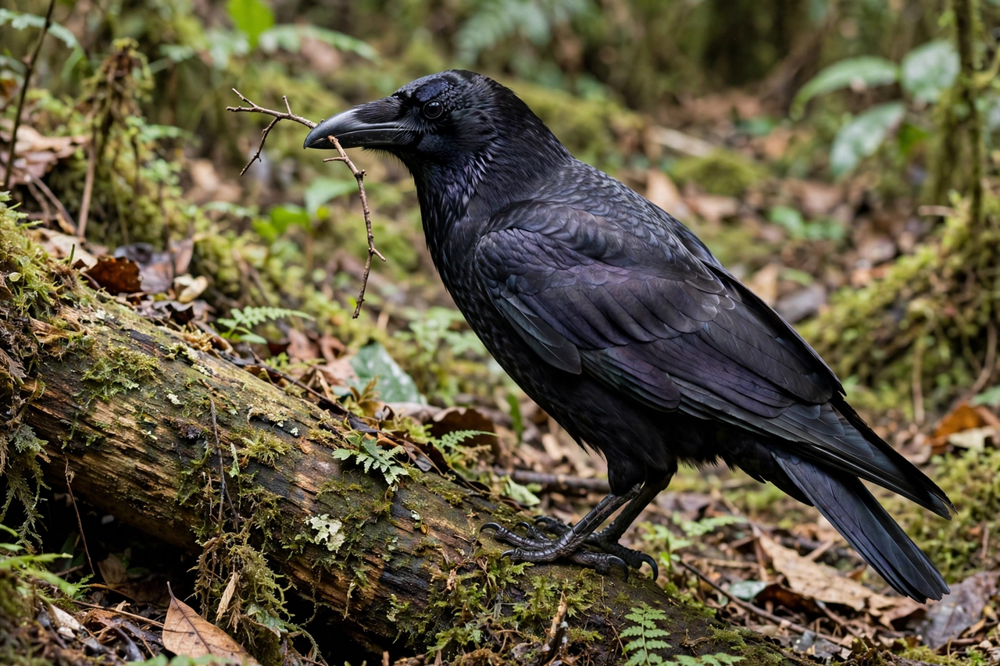

[Image placeholder: A New Caledonian crow, known for crafting hooked tools]**Animal intelligence** — studied as animal cognition — concerns the mental capacities of non-human animals: perception, learning, memory, problem-solving, communication, and possibly self-awareness and emotion. The field grew out of comparative psychology and ethology and overlaps with cognitive science.
Celebrated results include tool manufacture by New Caledonian crows, episodic-like memory in scrub-jays (remembering what food was cached where and when), mirror self-recognition in some apes, dolphins, elephants and magpies, numerical competence in many species, and complex communication in prairie dogs, bees (the waggle dance) and great apes taught sign or symbol systems. Researchers debate how far such findings demonstrate concepts, causal reasoning or a theory of mind, and caution against both anthropomorphism and what Frans de Waal called 'anthropodenial'.
Experiments test discrimination learning, delayed gratification (delayed-reward tasks in corvids and parrots rival primates), cooperation, and innovation. Octopuses excel at mazes and manipulation despite a very different nervous system — an example of convergent cognitive evolution. Dogs' unusually rich social cognition toward humans reflects domestication.
The Clever Hans affair set the field's caution about unintended cueing. Modern disputes focus on whether apes attribute mental states, whether animals have episodic memory or merely semantic-like familiarity, and how to compare intelligence across species with different senses and bodies (Umwelten).